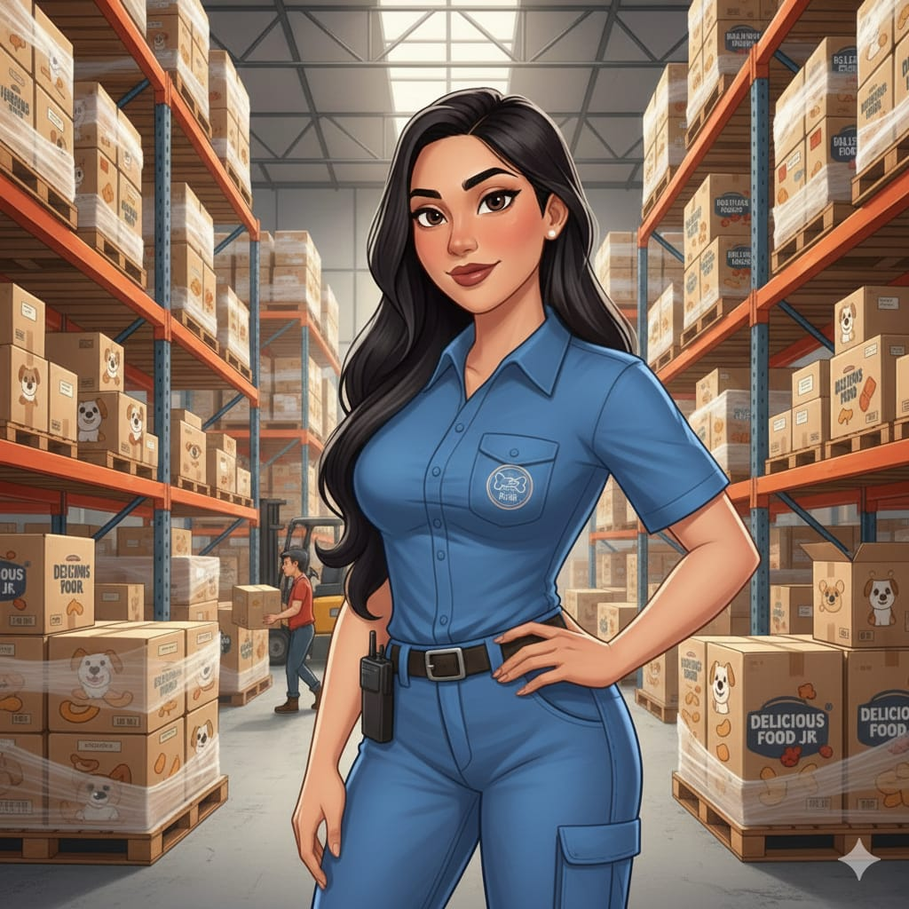
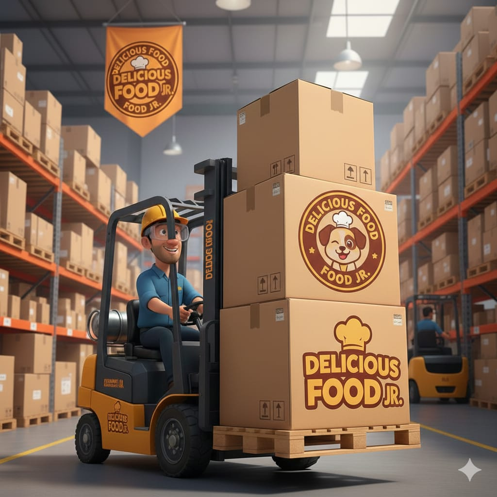
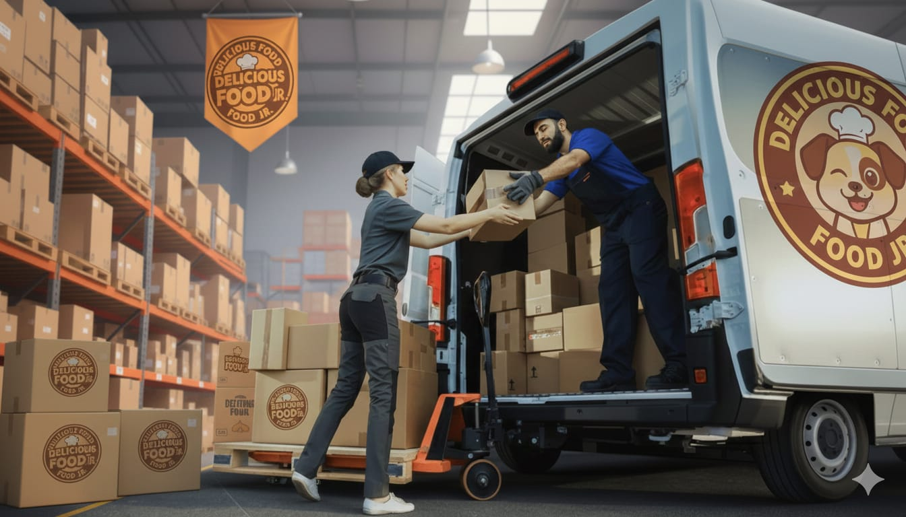

En Delicious Food J.R., encontrarás información transparente sobre nuestras bandas salariales. Nuestro sistema de compensación es competitivo y diseñado para reconocer la experiencia y el desempeño. Los salarios se ajustan a las responsabilidades del cargo para garantizar equidad y justicia salarial, complementados con beneficios y oportunidades de desarrollo profesional.
Salarios
Área Administrativa
Administradora de Empresa
Administradora con experiencia en la gestión de procesos administrativos, coordinación de equipos y control operativo. Orientada a resultados y al mejoramiento continuo de la empresa.
Secretaria general
Con habilidades en manejo de agenda, organización documental y apoyo directo a gerencia. Destacada por su eficiencia, comunicación clara y orden.
Auxiliar de recursos Humanos
Recursos humanos con experiencia en selección, contratación y bienestar laboral. Enfocada en apoyar el talento humano y mantener un clima laboral positivo.
Área De Producción

Jefe De Producción
Soy Jefa de Producción en Delicious Food, donde coordino y superviso los procesos de elaboración de snacks para mascotas. Además, estudié Auxiliar Administrativo, lo que me dio experiencia en Recursos Humanos y manejo de personal. Gracias a esto, tengo un perfil combinado entre administración y producción, lo que me permite trabajar con orden, liderazgo y enfoque en la calidad.
Auxiliar De Producción
Soy Auxiliar de Producción en Delicious Food, apoyando en las tareas de elaboración, empaque y control básico de calidad de los snacks para mascotas. Me encargo de mantener el área ordenada, seguir los procesos establecidos y trabajar en equipo para asegurar una producción eficiente y a tiempo.
Operario de Producción
Soy Operario de Producción en Delicious Food, encargado de manejar máquinas, apoyar en la elaboración de los snacks para mascotas y seguir los protocolos de calidad y seguridad. Trabajo de forma organizada y en equipo para asegurar que la producción sea continua y eficiente.
Operaria de Producción
Me desempeño como Operario de Producción en Delicious Food, realizando tareas como la operación de equipos, el control básico del proceso y el apoyo en el empaque de los productos. Cumplo con los estándares de calidad y mantengo un ritmo de trabajo constante para asegurar que la producción se desarrolle sin contratiempos.
Área De Bodega

Jefa De Almacen
Jefa de Almacén en Delicious Food J.R., Stefanny Aroca. Soy Técnico en Fichas Administrativas con experiencia clave en procesos de almacén: control de inventarios, organización y manejo de recepción y despacho de mercancía. Mi perfil destaca por ser organizado, responsable y eficiente, enfocado en garantizar el orden y buen funcionamiento del almacén.

Operaria De Montacargas
Operador de Montacargas en Delicious Food J.R. Profesional certificado en el manejo seguro y eficiente de montacargas. Amplia experiencia en el traslado, apilamiento (estiba) y ubicación precisa de mercancía y pallets. Mi compromiso es optimizar el flujo logístico, asegurando la rapidez, el orden y el cumplimiento estricto de las normas de seguridad en el almacén.
Auxiliar De Bodega
Auxiliar de Bodega en Delicious Food J.R. Experiencia en organización de inventario, picking, packing y despacho de mercancía. Mi enfoque se centra en el soporte operativo, la verificación de pedidos y el mantenimiento del orden dentro de la bodega. Soy una trabajadora proactiva, detallista y eficiente, garantizando el correcto flujo de productos

Repartidor/Conductor
Repartidor / Conductor en Delicious Food J.R. Especialista en logística de distribución, planificación de rutas y entrega oportuna de productos. Combino manejo seguro y responsable con una actitud enfocada en el servicio al cliente. Garantizo eficiencia en las entregas y la correcta documentación de la mercancía.